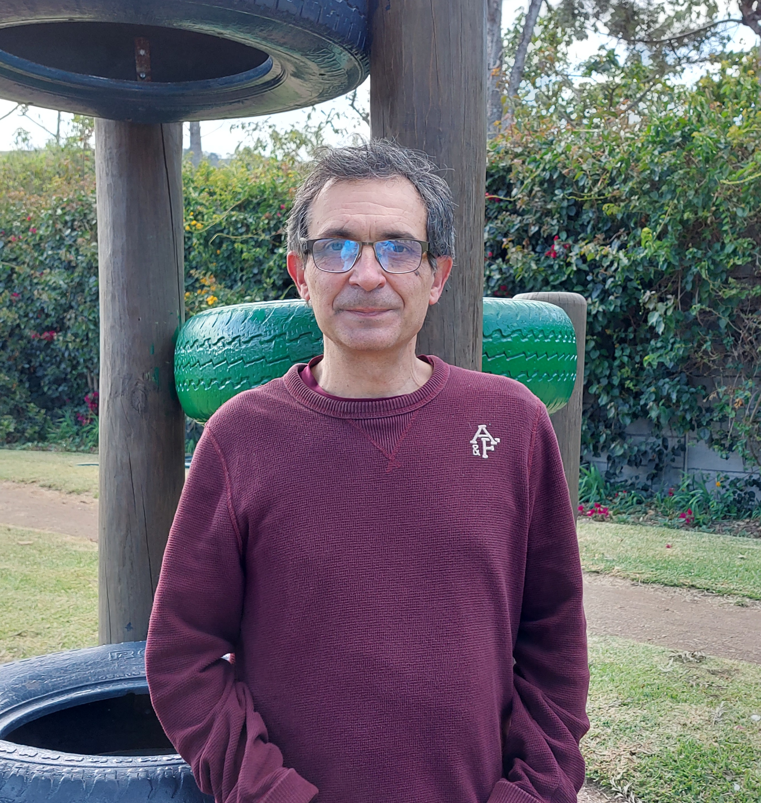
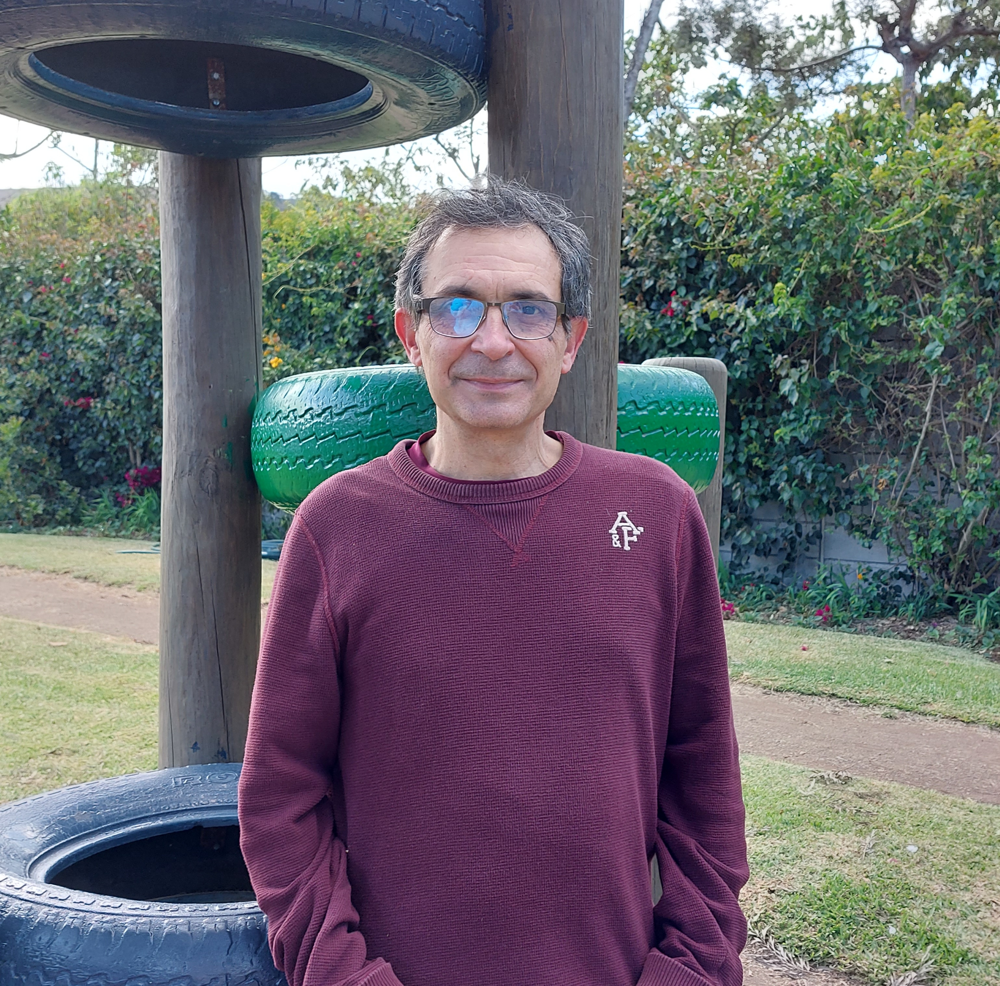
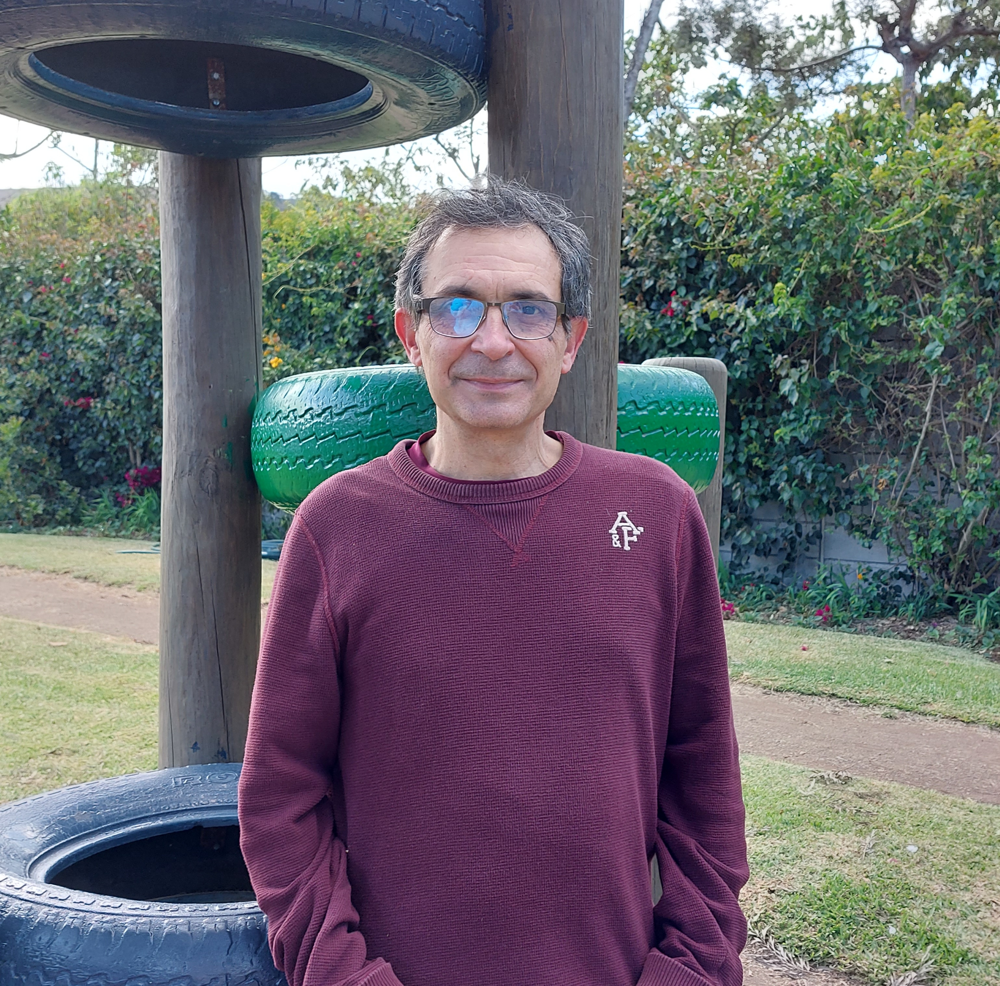

Javier Bustamante
Esta página web esta dedicada la vida de Javier Bustamante, profesor de idioma español en Antigua International School.

 

Datos interesantes sobre su vida
Tablas de información
| Mascotas de preferencia |
Comida preferida |
Música |
| perros |
paella |
Beatles |
| loros |
Fideua |
Ricardo Arjona |
| Nombre |
Luis Javier Bustamante |
| Lugar de nacimiento |
Barakaldo, España |
| País donde radica actualmente
|
La Antigua Guatemala |
| Lugar de trabajo
|
Antigua International school |
Datos sobre su vida
¿Qué le motiva a Javier Bustamante?
En el colegio, le motiva mucho que sus alumnos aprendan y sobre todo que al final de la clase sientan que aprendieron algo nuevo y sobre todo que hayan disfrutado de la clase.
Le motiva mucho que su hija vaya progresando en la universidad y que vaya “caminando” poco a poco.
¿Es extrovertido o introvertido?
En el colegio él se siente más como alguien extrovertido ya que le gusta contar historias y expresarse con sus alumnos.
Recuerdos tempranos
Uno de los recuerdos que más tiene presente es el año y medio que estuvo dando clases de manera virtual, sin descansar. Ya que fue un cambio difícil para todos y fue difícil adaptarse a los nuevos métodos de enseñanza.
Otro de los recuerdos tempranos que más disfruta recordar es cuando su esposa y su hija, le escriben desde el país en donde su hija estudia, contándole lo bien que lo ha hecho en algún examen que ha tenido.
¿Cúal es su inspiración?
Su inspiración es su hija. Está orgulloso de lo que ella es ahora. Él quería que ella estudiara algo relacionado con la literatura, ciencias sociales, sin embargo, ella decidió ser bioquímica y le inspira mucho verla trabajar duro y estudiar mucho para poder pasar los exámenes.
Artistas, obras y cantantes favoritos
- Juez de los divorcios
- Música clásica
- Joaquín Sabina
- Antonio Bnderas
- Penelope Cruz
GRACIAS POR LEER